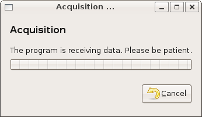

| GNOME Scan UI Reference Manual | ||||
|---|---|---|---|---|
GnomeScanAcquisitionDialogGnomeScanAcquisitionDialog — A dialog to manage and survey the acquisition process |
 |
GnomeScanAcquisitionDialog;
GtkWidget* gnome_scan_acquisition_dialog_new
(GnomeScanContext *context,
GtkWindow *parent);
GObject
+----GInitiallyUnowned
+----GtkObject
+----GtkWidget
+----GtkContainer
+----GtkBin
+----GtkWindow
+----GnomeScanAcquisitionDialog
GnomeScanAcquisitionDialog is just a popup dialog that show the percentage of data received and allow user to cancel acquisition. In later version the widget will allow user to manage multiple acquisition as easy as possible even with flatbed devices.
typedef struct {
GnomeScanContext *context;
} GnomeScanAcquisitionDialog;
GtkWidget* gnome_scan_acquisition_dialog_new
(GnomeScanContext *context,
GtkWindow *parent);
Create a new GnomeScanAcquisitionDialog connected to context. If
parent is not NULL, the new GnomeScanAcquisitionDialog is set
transient for parent.
context : |
a GnomeScanContext |
parent : |
a GtkWindow |
| Returns : | a new GnomeScanAcquisitionDialog |
context" property"context" GnomeScanContext : Read / Write
The GnomeScanContext the widget is connected to.